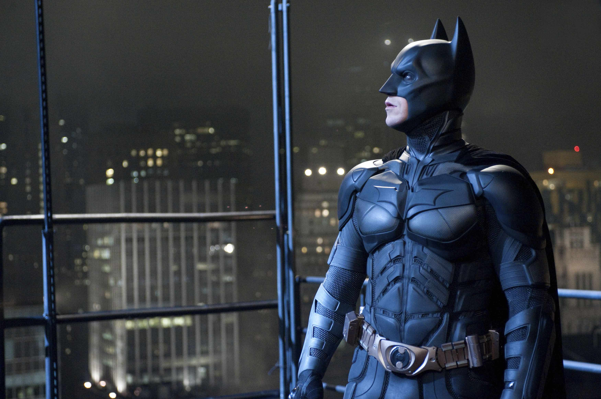
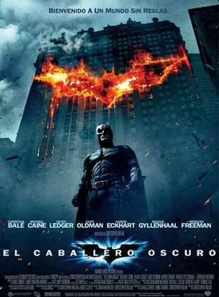
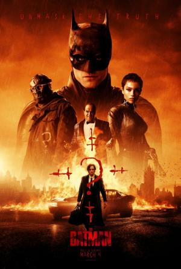
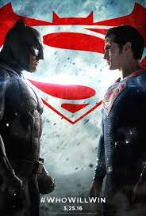

|
18 de Febrero de 2022 |
|  |
Es un personaje de cómic creado por los estadounidenses Bob Kane |
 @Carlos_duarte_1254
@Carlos_duarte_1254  22:41
22:41 Galeria

|
 |

|
 |  |
|
El caballero de la noche |
El caballero oscuro |
Liga de la justicia |
The batman |
El origen de la |